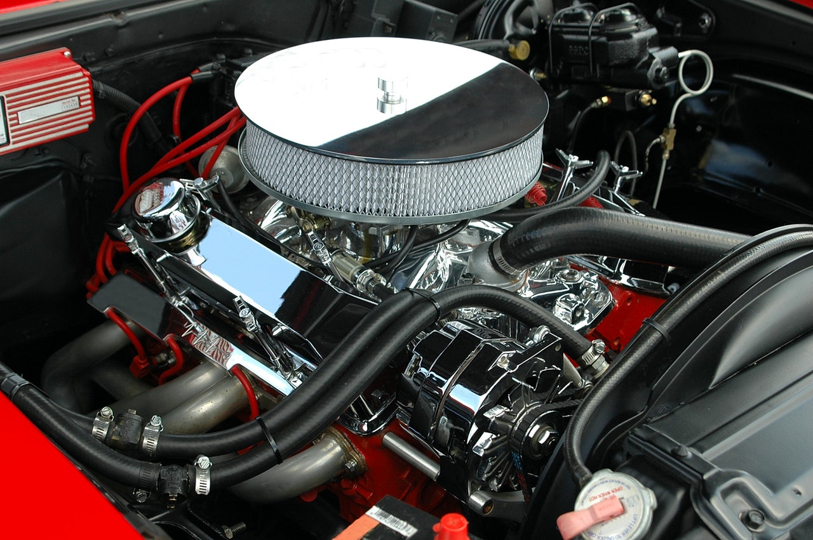
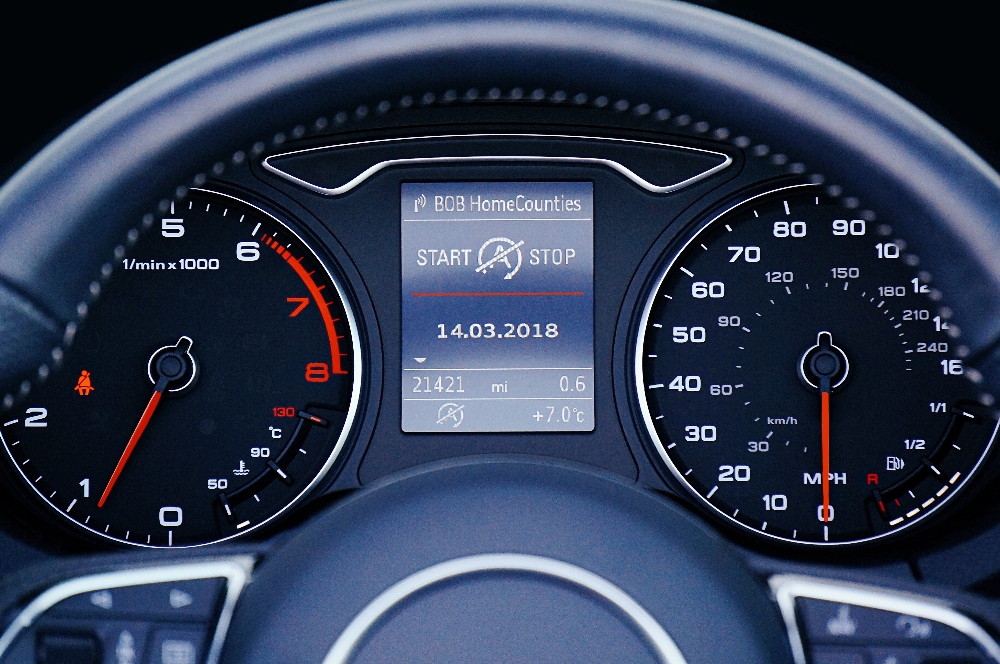

(2 + 3)*5[1] 25Die Software ist eine Programmiersprache, die darauf spezialisiert ist statistische Modellierungen vorzunehmen. führt jedoch nur Computationen aus. Die Steuerung dieser Computationen mithilfe von Syntax (Befehle in Textform) und die Darstellung der Ergebnisse wird von sogenannten Graphical User Interfaces (GUI) oder Integrated Development Environments (IDE) übernommen.
Einige Autoren (Ismay & Kim, 2020) erklären diesen Unterschied ( vs. GUI/IDE) mit einer Analogie zu dem Verhältnis eines Automotors (= ) zu einem Autocockpit (= GUI/IDE). Die eigentliche Arbeit verrichtet der Motor, er wird jedoch vom Cockpit aus gesteuert und sein “Output” (Drehzahl, Geschwindigkeit, etc.) wird ebenfalls dort angezeigt.
| R: Motor | GUI/IDE: Cockpit |
|---|---|
 |
 |
Im Rahmen dieses Kapitels verwenden wir ein sehr einfaches GUI (siehe folgender Abschnitt), das die Eingabe von Syntax in einem kleinen Textfenster erlaubt, diese Syntax via Klick auf den -Button an R übergibt und dann Output unterhalb des Fensters darstellt.
Neben komplexeren statistischen Modellierungen kann natürlich auch einfache arithmetische Operationen ausführen.
+-*/^sqrt()Dabei wendet (genau wie Taschenrechner) die üblichen Konventionen (z.B. »Punktrechnung vor Strichrechnung« oder »Klammer zuerst« an), wie an folgendem In- und Output erkennbar:
(2 + 3)*5[1] 25Addieren Sie im folgenden Fenster 5 und 13.
#| exercise: arith_ex1
______ + ______Lösung.
5 + 13Berechnen Sie im folgenden Fenster die Wurzel aus 16, indem Sie in der gegebenen Syntax die ______ ersetzen.
#| exercise: arith_ex2
Fragen Sie eine Suchmaschine oder KI nach einer passenden Funktion.
Lösung.
sqrt(16)Recherchieren Sie die Funktion (»das Zeichen« auch »den Operator« genannt) für den Logarithmus zur Basis 10. Berechnen Sie im folgenden Fenster log10(100).
#| exercise: arith_ex3
log(______, base = ______)Lösung.
log(100, base = 10)< für »kleiner als«> für »größer als«<= für »kleiner als oder gleich wie«>= für »größer als oder gleich wie«== für »gleich«!= für »ungleich«%in% für »liegt in der Menge«Als Ergebnis eines solchen Vergleichs erhält man TRUE oder FALSE, wie folgende Beispiele zeigen:
4 + 2 < 3[1] FALSE10 == 4 + 6[1] TRUEZusätzlich werden oftmals noch die logischen Operatoren
& für »und«| für »oder«benutzt.
Prüfen Sie im folgenden Fenster ob \(2^2 + 3^2\) gleich \(5^2\) ist.
#| exercise: log_ex1
Der Funktion für das exponentieren ist ^. Also 25 erhält man z.B. via 5^2.
Lösung.
2^2 + 3^2 == 5^2library(exams2forms)Warning: package 'exams2forms' was built under R version 4.4.2Loading required package: examsdownload.file("https://raw.githubusercontent.com/sammerk/aufgaben/refs/heads/master/inferenzstatistik/interpretation-u3-p/exams/interpretation-u3-p.Rmd",
"tempfile.Rmd")
exams2forms("tempfile.Rmd", n = 1)Ein Forscher untersucht, inwiefern sich Lehramtsstudierende von anderen Studierenden bzgl. ihrer kognitiven Fähigkeiten unterscheiden. Sie findet ein Cohen’s U₃ = .52 mit einem p-Wert von .562
download.file(“https://raw.githubusercontent.com/sammerk/aufgaben/refs/heads/master/inferenzstatistik/interpretation-u3-p/exams/interpretation-u3-p.Rmd”, “tempfile.Rmd”) exams2forms(“tempfile.Rmd”, n = 15)